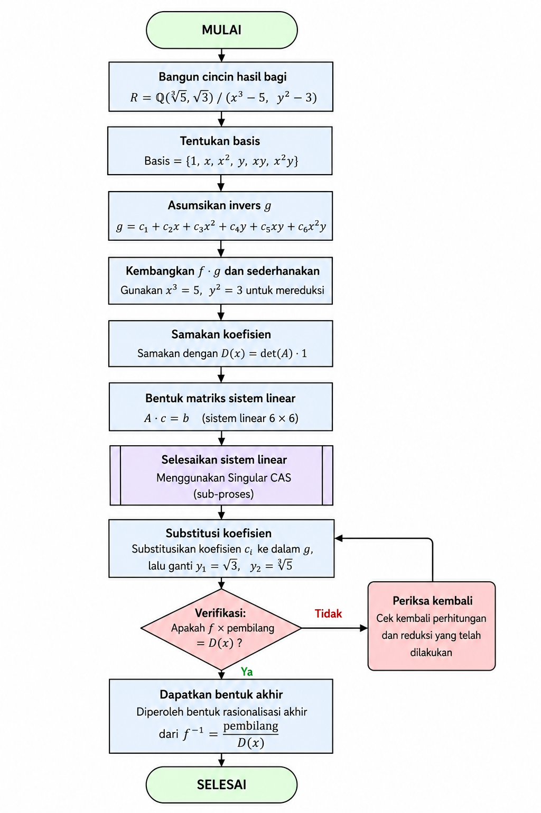

2.1.7 – Rationalize the denominator

Memecah bentuk akar
Perhatikan setiap komponen penyebut:
Kita definisikan variabel baru untuk menyederhanakan notasi:
Dengan demikian:
Penyebut menjadi:
Ideal yang merepresentasikan relasi aljabar:
Masalahnya sekarang: mencari invers dari \(f\) di dalam ring kuosien \(\mathbb{Q}(x)[y_1,y_2]/I\).
Proses dalam Flowchart

Bangun ring kuosien
Misalkan \(y_1 = \sqrt{3}\) dan \(y_2 = \sqrt[3]{5}\). Maka
Definisikan ideal
Penyebut menjadi
Tentukan basis
Setiap polinomial tereduksi menjadi kombinasi linear dari
Dengan demikian ruang kuosien berdimensi \(2\times 3 = 6\) atas \(\mathbb{Q}(x)\).
Asumsikan invers & ekspansi
Misalkan \(g = c_1 + c_2y_2 + c_3y_2^2 + c_4y_1 + c_5y_1y_2 + c_6y_1y_2^2\).
Hitung \(g\cdot f\) modulo \(I\) (menggunakan \(y_1^2\to3,\; y_2^3\to5\)):
Samakan koefisien
Menyamakan koefisien basis \(\mathcal{B}\) menghasilkan sistem linear:
Bentuk matriks \(A\mathbf{c}=\mathbf{b}\)
Selesaikan sistem linear
Determinannya adalah
Penyelesaian menghasilkan koefisien:
Bentuk rasional akhir
Substitusi balik \(y_1=\sqrt3,\; y_2=\sqrt[3]{5}\) (sehingga \(y_2^2=\sqrt[3]{25}\)):
Penyebut \(D(x)\) adalah penyebut rasional (polinomial dalam \(x\) saja).
Implementasi ke dalam Singular CAS
Kode Singular berikut mengikuti langkah‑langkah di atas dan menghasilkan bentuk rasional.
// ========== Langkah 1 : Definisikan ring dan ideal ==========
ring R = (0,x), (y1, y2), lp;
ideal I = y1^2 - 3, y2^3 - 5;
// ========== Langkah 2 : Hitung basis Gröbner ==========
ideal J = std(I);
// ========== Langkah 3 : Bentuk penyebut f ==========
poly f = x + y1 + y2^2;
// ========== Langkah 4 : Penyebut rasional D(x) ==========
poly D = x^6 - 9*x^4 + 50*x^3 + 27*x^2 + 450*x + 598;
// ========== Langkah 5 : Koefisien c1..c6 (dari solusi matriks) ==========
poly c1 = (x^5 - 6*x^3 + 25*x^2 + 9*x + 75) / D;
poly c2 = 5*(x^3 + 9*x + 25) / D;
poly c3 = (-x^4 - 25*x + 9) / D;
poly c4 = (-x^4 + 6*x^2 + 50*x - 9) / D;
poly c5 = -15*(x^2 + 1) / D;
poly c6 = (2*x^3 - 6*x - 25) / D;
// ========== Langkah 6 : Bentuk pembilang N ==========
poly N = c1 + c2*y2 + c3*y2^2 + c4*y1 + c5*y1*y2 + c6*y1*y2^2;
// ========== Langkah 7 : Verifikasi f*N - 1 ≡ 0 (mod I) ==========
poly check = reduce(f*N - 1, J);
"Hasil Verifikasi:", check;
// ========== Langkah 8 : Tampilkan pembilang panjang (N * D) dan penyebut ==========
poly num = N * D;
"Pembilang setelah dirasionalkan:";
num;
"Penyebut setelah dirasionalkan D(x):";
D;